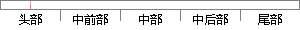

而对于静止目标来说，时差频差定位通过将时差线和频差线相交，得到辐射源的位置估计。
片段位置图

相似结果|
1
原句片段：而对于静止目标来说，时差频差定位通过将时差线和频差线相交，得到辐射源的位置估计。
相似片段 1：三维定位要求来说 至少需要四个接收站 形成的三个双曲面相交点即为辐射源位置...时差定位是通过测量得到的含噪声的时差信息来实时估计目标的位置信息 在直角坐标...
|
※ 片段修改建议 ※
近似词参考：- 对于：对 对付
- 目标：方针 目的
- 来说：来讲
- 通过：经由过程
- 相交：订交
- 得到：获得
- 估计：估量 预计
系统自动生成语句：而对静止方针来讲，时差频差定位经由过程将时差线和频差线订交，获得辐射源的位置估量。
注：本片段修改建议为系统自动生成，仅供参考。